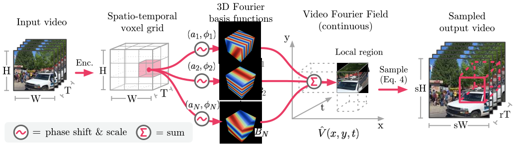

Continuous Space-Time Video Super-Resolution with 3D Fourier Fields
Abstract
We introduce a novel formulation for continuous space-time video super-resolution. Instead of decoupling the representation of a video sequence into separate spatial and temporal components and relying on brittle, explicit frame warping for motion compensation, we encode video as a continuous, spatio-temporally coherent 3D Video Fourier Field (VFF). That representation offers three key advantages: (1) it enables cheap, flexible sampling at arbitrary locations in space and time; (2) it is able to simultaneously capture fine spatial detail and smooth temporal dynamics; and (3) it offers the possibility to include an analytical, Gaussian point spread function in the sampling to ensure aliasing-free reconstruction at arbitrary scale. The coefficients of the proposed, Fourier-like sinusoidal basis are predicted with a neural encoder with a large spatio-temporal receptive field, conditioned on the low-resolution input video. Through extensive experiments, we show that our joint modeling substantially improves both spatial and temporal super-resolution and sets a new state of the art for multiple benchmarks: across a wide range of upscaling factors, it delivers sharper and temporally more consistent reconstructions than existing baselines, while being computationally more efficient.
How it works
Overview of V3: A backbone encoder predicts a voxel grid of local phase shifts and weighting coefficients for a set of 3D Fourier basis functions. Their sum describes, within a local interval, the continuous function V (x, y, t) that we call the Video Fourier Field. The function can be sampled at different spatio-temporal resolutions to obtain an output video.
Results
The videos below show results on the spatio-temporal video SR task. For all methods, we select ×4 spatial and ×8 temporal upsampling factors. Different methods can be selected using the menu below each video. Note how V3 reaches much more consistent results, and reconstructs sharper details.
Temporal Cross Section
The figure below shows a vertical slice through a video over time, i.e. its temporal cross section. It shows how V3 propagates structure smoothly through time, while comparison methods exhibit overly linear behavior and blocky discontinuities (arrows).

Temporal cross sections through a super-resolved video for various methods.
Computational Efficiency
Generally, V3 is significantly faster than competitors while reaching superior performance.
Performance-speed tradeoff of various methods.
BibTeX
If you found our work helpful, consider citing our paper 😊:
@misc{becker2025continuous,
title={Continuous Space-Time Video Super-Resolution with 3D Fourier Fields},
author={Alexander Becker and Julius Erbach and Dominik Narnhofer and Konrad Schindler},
year={2025},
eprint={2509.26325},
archivePrefix={arXiv},
primaryClass={cs.CV},
url={https://arxiv.org/abs/2509.26325},
}